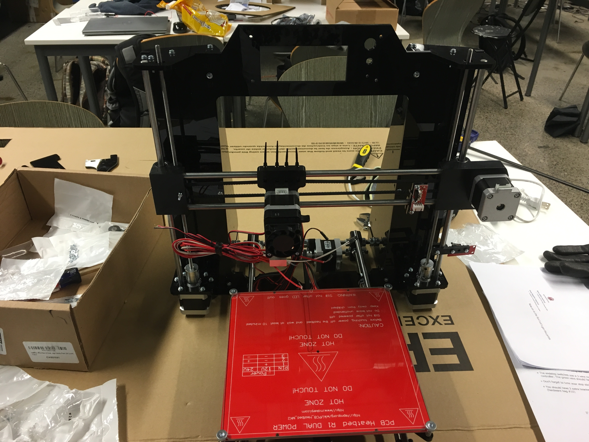
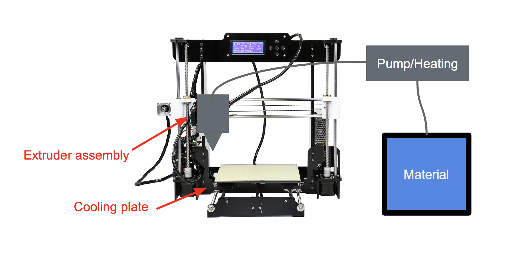
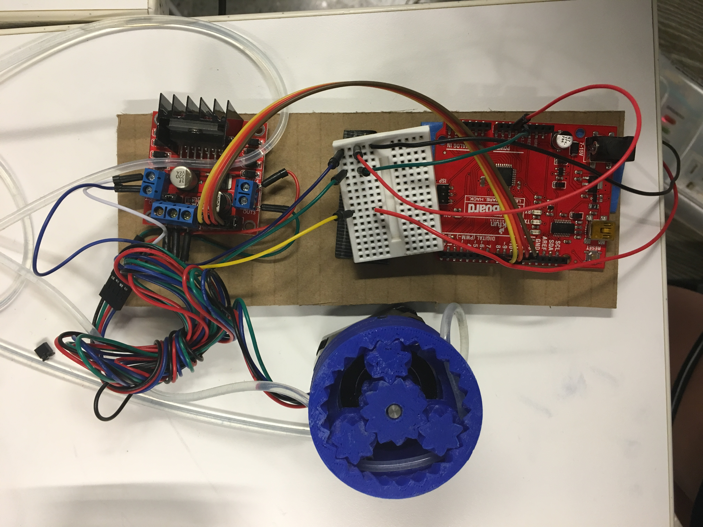

Universal Liquid 3D Printer
Aida Akuyeva, Warren Wan and Jeffrey Yu
Description
This project developed an apparatus that can allow a traditional fused deposition 3D printer to print with a variety of liquids and pastes. Unlike previous inventions, you can choose what material you want to print with.
The apparatus utilizes the coordinate system axes of an existing printer and comprises of three main parts: the extruder assembly, pump system, and reservoir.
Our goal is for everyone to be able to use such printers at home, which will be cheap and efficient. Unlike previous inventions, our printer is universal liquid, which means that you can print with various liquids. For instance, with chocolate or gel!
Reservoir system
Our reservoir system consists of two levels. The upper one includes a plastic container with an acrylic lid, which we 3D modeled and laser cut, as well as an IV bag inside and the tube. You can pour any liquid there and it will go though the tube down. The second level is a table, which we laser cut as well. This construction holds the container.
The electronics behind the printer:
We assembled a 3D printer for which we 3D printed and laser cut details. Then we coded in Arduino the motors to move. After a lot of trials, we succeeded! The printer started working and printing with plastic, so we started re-designing it to work with other materials.
 This is a photo of the circuitry with an Arduino Uno.Extruder assembly

Pump system
The pump system utilizes a parametric peristaltic pump modified from an Creative Commons design, fitted on top of a stepper motor. This design allows for the smooth transportation of print material from the reservoir to the extruder assembly. The extruder assembly comprises of an adapter from the tubing to a luer lock needle. The needle acts as the extruder tip, laying material onto the build platform of the printer, creating a three-dimensional object.
Here is a small video of how it works:
What we learned during this program:
By working on a project we not only learned new 3D design programs, such as SolidWorks, Inventor, Rhino, Fusion360 and AutoCad, but also collaborated as a team. In addition, we worked on laser cutting and 3D Printing. Overall, Cooper Union Summer STEM Program was an amazing experience for all of us!